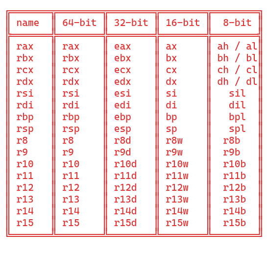

U Assembleru je základní strukturan rozdílná podle toho v jaké arhitektuře pracujeme. A to jako první zda v x86 nebo v ARM a poté zda 32 bits nebo 64 bits.
Struktura pro x86_64:
C/C++ dokumentace zde
Proměnné se deklarují pomocí extern v section .data.
Funkce mají stejnou deklaraci a volání jak klasické ASM funkce. Declarují se v section .text pomocí global, která ukazuje, že daná funkce je globální.
Vždy se berou spodní bity

mov - přesouvá proměnné do registru stejné velikostimovzx - přesouvá proměnné do většího registru než je proměnná sama a prázdné místo vyplní nulamimovsx - téměř totožné jako movzx akorát že zachovává znaménko -+int - je to interupt neboli přerušení programu volá externě podle zadané hodnoty co se má stát a udělatcmp - dělá to samé co sub akorát že výsledek zahodí, používá se u podmíněných skokůadd - je to přičtení k hodnotěsub - je to odečtení od hodnotyimul [Co se násobí], [Kde se to uloží], [čím se to násobí] - násobenídec - od hodnoty odečte 1inc - k hodnotě přičte 1neg - změní znaménkoand - logický spučin, když na pozici oba vstupy mají 1 tak výsledek je 1, používá se k masceor - logický součet, kdzž alespoň jedna hodnota je jedna tak je výsledek 1 jinak 0xor - dá jedna pokud se logické proměnné liší jinak dá 0not - bitová inverze, otočí všechny bitytest - dělá to co and ale výsledek zahodí stejně jako cmp, používá se u podmíněných skokůshl - bitový posun dolevashr - bitový posun dopravarol - bitová rotace dolevaror - bitová rotace dolevaPodmíněné skoky reagují na předchozí příkaz:
JMP - skok bez podmínkyJE;JZ;JNE - = ; = 0 ; !=JB;JBE / JL;JLE - < ; <= ; bez znaménka / se znaménkemJA;JAC / JG;JGE - > ; >= ; bez znaménka / se znaménkemMOVSX) a rovnou je u toho cpát do paměti (musíš to roztáhnout v registru a pak to tam uložit)RBX je kolikrát využíván jazykem C a nemusí se hodit ho využívat[rax + rdx*2], musí být registry jsou zapsány v 64 bit velikostí (pokud používáme 64 bit)SHL, SHR pokud se posun chce uvádět přes registr místo čísla tak musí být uveden v 8 bitové variantě registru, př. shr eax, clParametry se načítají automaticky do konkrétního registru, specificky pro část, která odpovídá velikosti danému datovému typu.
Hodnoty se vrací primárně přes reg. RAX
Pro posun v danné proměnné sp požívá + * a to každý jiným způsobem.
čísla - čísla 1-9 vytváří posun o bajtech a 1 bajt má 8 bitů+ - příčteš číslo k proměnné a tím posuneš o počet bajtů* - dává se za +číslo a to podstatě, když posuneš něco tak to musí být o velikost celé hodnoty kterou chceš posunout, takže pokud máš pole které má Unit16 a dáš +1 tak posuneš o 8 bitů a né o velikost celého pole takže musíž posunout o celou velikost pole a násobením *2 dorovnáš k dané velikosti a tudíž +1*2 posuneš o 16bitů do druhého prvku a u +2*2 posuneš o 32 bitů neboli do prvku třetího. můž s násbyt dle 2 na n -> 1, 2, 4, 8[promena + posun * hodnota_pro_dorovnani_velikosti]